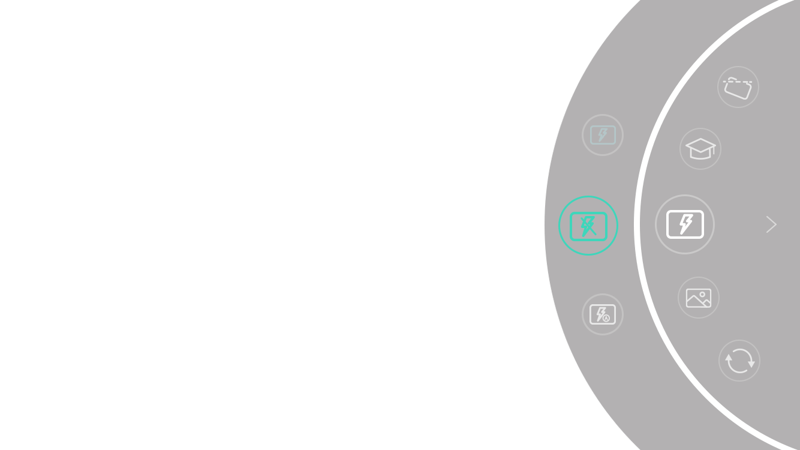

Creative Filming with the MOZA Genie App
The MOZA Mini-S Essential can be connected to the MOZA Genie APP with just one tap of your finger, making filming visually creative, interesting and enjoyable.
